<ion-content>
  <div class="ajust-icon">
    
  </div>
    <div class="principal-image">
      
    </div>

    <h3>8:30</h3>
    <ion-button size="large" color="secondary">Começar</ion-button>
</ion-content>
